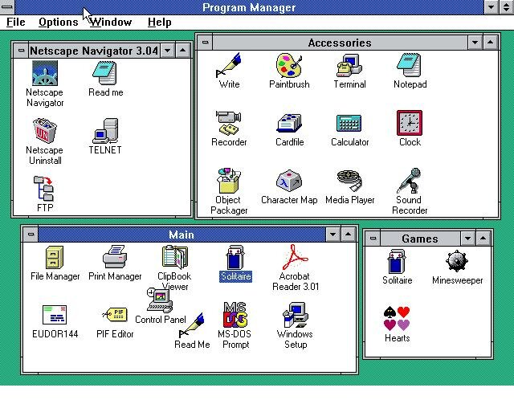

Un système d'exploitation, ou OS pour Operating System, définit un ensemble de programmes chargé d'établir une relation entre les différentes ressources matérielles, les applications et l'utilisateur.
Dans un ordinateur, le système d'exploitation a plusieurs missions. Il gère, entre autres, le processeur et la mémoire vive, optimise l'exécution des applications en leur attribuant les ressources nécessaires, fournit un certain nombre d'informations sur le bon fonctionnement de l'ordinateur, etc. Il permet l'utilisation de périphériques dans les meilleures conditions et protège l'accès aux ressources.
Un système d'exploitation se compose la plupart du temps d'un noyau (kernel en anglais), d'un interpréteur de commande (shell en anglais) et d'un système de fichiers (file system en anglais). Au début des années '80, Microsoft a introduit les fenêtres avec "Windows", qui veut justement dire "fenêtres" en anglais.
Parmi les systèmes d'exploitation les plus répandus aujourd'hui dans le monde, on peut citer Mac OS d'Apple, Windows de Microsoft, ou encore Android pour les téléphones mobiles et les smartphones.
Système d'exploitation : les acteurs
Linux, Apple (avec iOS, TvOS, MacOS...), Microsoft (Windows) et Google (Android)...
L'acteur majeur des systèmes d'exploitation est Microsoft Windows.
Nous vons détailleons ici son évolution au fil des années.
MS-DOS
L’histoire de Windows est indissociable de celle de MS-DOS. Elle raconte comment une opportunité a changé le cours de l’industrie informatique personnelle, alors balbutiante. IBM, qui souhaite lancer en 1980 son premier PC, préfère acheter un système existant plutôt que de développer le sien.

Windows 1.0
À sa sortie en novembre 1985 – et pendant une décennie –, Windows n’est pas un OS. Il s’agit d’une interface graphique pour MS-DOS visant à aider les utilisateurs à réaliser plus rapidement des opérations grâce à une souris.
On retrouve bien sûr le système de fenêtres qui a donné son nom au produit, ainsi que quelques outils de base, désormais célèbres, comme Paint. Windows 1.0 comporte cependant une longue liste de limitations. Il hérite notamment de toutes les barrières imposées par MS-DOS, dont le fonctionnement monotâche.
Certaines capacités d’interface sont également bridées pour respecter les termes d’un accord conclu avec Apple qui possède déjà à cette époque d’importants brevets dans ce domaine (basés sur des idées récupérées chez Xerox). Peu performant et ne proposant rien de plus que les produits existants, trop limité, le succès de Windows 1.0 ne sera qu’anecdotique. Il réclame au minimum 256 Ko de mémoire, mais 512 Ko et un disque dur sont recommandés.

Windows 2.0
Lorsque débarque la version 2.0 deux années plus tard, une partie des barrières a disparu. Les fenêtres peuvent se chevaucher (créant la toute première tension avec Apple) et le multitâche fait son entrée, bien qu’en mode coopératif, potentiellement instable.
Windows 2.0 sera davantage utilisé, d’autant plus parce que Microsoft l’offre pour tout achat de Word ou Excel. Exécutables depuis MS-DOS, ils s’ouvrent alors avec une nouvelle interface graphique. Un ajout témoignant de ce qu’était encore Windows à l’époque. L’évolution technique vient cependant avec Windows 2.1 qui introduit pour la première fois le mode protégé (segmentation de la mémoire), rendu possible par le processeur 80286 d’Intel.
La mémoire virtuelle est de la partie, de même que les niveaux de privilège (les fameux « rings » 0 à 3). Avec le 80386 sort une version adaptée de Windows, avec cette fois la mémoire protégée, autorisant le fonctionnement des programmes MS-DOS et logiciels en tâches de fond.
Windows 3.0/3.1
Windows 3.0, apparu en mai 1990, marque une rupture. Il devient évident que le produit est amené à jouer un grand rôle, l’interface graphique y étant prépondérante. Techniquement, Windows 3.0 reprend le mode protégé de la mouture 2.1, mais avec un adressage étendu sur 32 bits, permettant de gérer jusqu’à 4 Go de mémoire.
Les programmes conçus pour le mode réel fonctionneront désormais dans cette mémoire, tandis que ceux pour Windows se serviront du mode protégé. Windows 3.0 marque également le début du succès. Plus mature, doté d’une base de pilotes rafraîchie – chaque Windows a alors son propre stock fixe –, il touche plus globalement le grand public.
C’est surtout sa version 3.1, sortie au printemps 1992, qui restera la plus connue, de même que son évolution « 3.11 for Workgroups », pendant l’été 1993. La première a supprimé le mode réel, ajouté le support des polices TrueType, inauguré le Bloc-Notes et a pu faire grimper la résolution jusqu’en 1 024 x 768 pixels.
La seconde, bien que d’apparence mineure, représente en fait une évolution technique. Elle rend obligatoire l’utilisation d’un processeur 80386 pour profiter de son mode protégé 32 bits. Un support réseau, aussi 32 bits, a en outre été ajouté. À partir de cette époque, Windows va se diviser en deux branches.
D’un côté, les systèmes « 9x » (95, 98…) surtout destinés au grand public. De l’autre, les NT réservés aux entreprises. Il faudra attendre Windows XP en 2001 pour que la société Microsoft n’en garde qu’une, centrée sur NT. La plateforme de développement logicielle est, elle, commune dans les grandes lignes.
